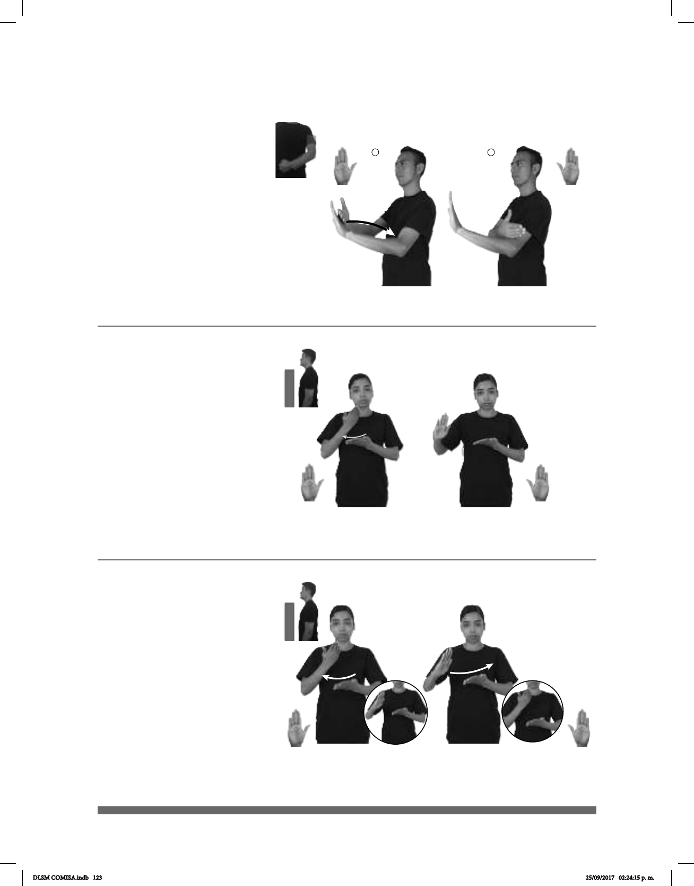

123
Seña: SB
MD y MB B-P.2
MD palma hacia adentro. MB
palma hacia afuera.
A la altura del pecho. MD detrás
de MB.
La MD se mueve formando
un arco hacia atrás.
1. adv. En un momento
pasado o en un lugar que se localiza primero
en
relación con el que se toma como referencia.
2. adj. Que ha sucedido, que ya terminó, que
es inmediatamente anterior a hoy o a lo que
es actual.
–
1
/ Pasado
2
(B-P 37)
ANTES pro-YO COMER++
Yo comía mucho antes.
(B-P 38)
(B-P 39)
MAESTRO
derecha
ALUMNOS
área
REUNIÓN APARTE
El maestro se reunió aparte con sus alumnos.
dm-JUAN ASUNTO APARTE
Con Juan, es un asunto aparte.
Seña: SB
MD y MB B-P.2
MD la palma inicia
hacia la izquierda y termina hacia
afuera. MB palma hacia arriba.
A la altura del pecho.
MD sobre MB.
MD el antebrazo gira
a la derecha formando un arco.
adv. En otro lugar, por
separado.
Seña: SB
MD y MB B-P.2
La MD palma inicia hacia
adentro y termina oblicua hacia abajo y
hacia la izquierda. MB palma hacia
arriba.
A la altura del pecho. MD
sobre MB.
La MD se mueve
formando un arco de derecha a
izquierda repetidamente mientras el
antebrazo gira y cambia la orientación
de la palma.
adv. En otro lugar, por
separado.
DLSM COMISA.indb 123 25/09/2017 02:24:15 p. m.